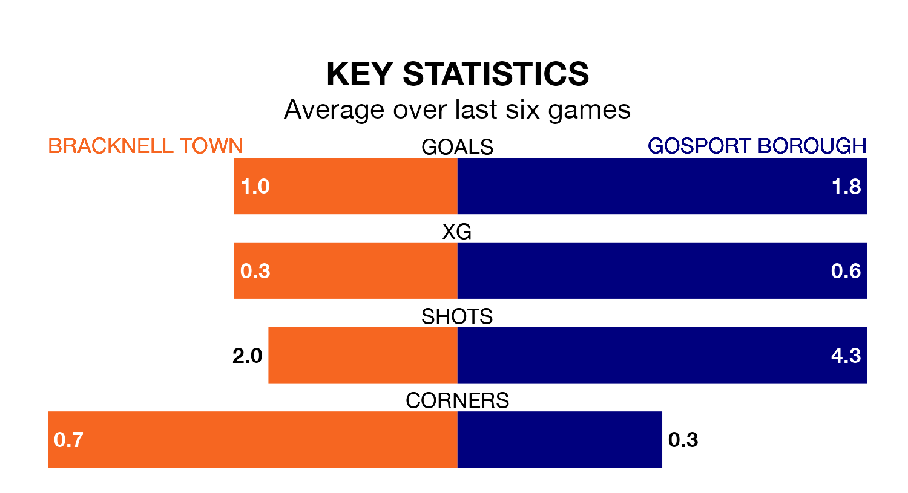

Gosport Borough travel to Bracknell Town on Saturday in Southern League Premier South.
The visitors come into the game on the back of a draw in their last match, having tied with Plymouth Parkway 1-1 at home.
Bracknell, meanwhile, lost their last match, 1-0 against Didcot Town.
Gosport are fourth in the table after 23 games, of which they have won 14 and drawn five, earning 47 points.
Bracknell are five places behind Borough in ninth, with 11 wins and three draws putting them on 36 points.
With 44 goals in 23 games so far this season, the away team are scoring more than average in the league with 1.9 goals per game. And they are conceding fewer than average, letting in 21 goals at a rate of 0.9 per game.
Town are also above average scorers, with 1.8 goals per game, compared to a league average of 1.7. They have conceded 1.5 goals per game.
In the last three years, Bracknell and Gosport have played each other on three occasions. Bracknell won two of them and Gosport one.
Their last meeting was on August 5, when Gosport won 2-0 at home.
The hosts are in mixed form in Southern League Premier South, with two wins and two draws from their last six games.
With three wins and two draws over that period, Gosport's form is better – they have taken 11 points from 18, compared to Bracknell's eight.
Updated: 06:13 (UTC), 18/01/24